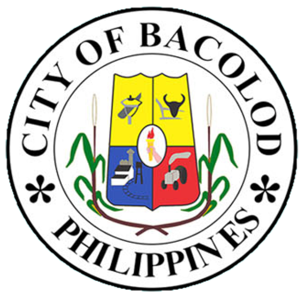

Contact Us
Home
Tourist Attractions
Bacolod City History
MassKara Festival History
Contact Us
Contact Information
For inquiries and information about Bacolod City, you can contact us through the following:
Official Website:
Bacolod City LGU
Office of the Mayor:
mayoralbee@bacolodcity.gov.ph
Tel No.: (034) 434-9122, (034) 432-7196
City Tourism Office:
City Tourism Office
Tel No.: (034) 469-6062
Address: Bacolod City Hall, Luzuriaga St., Bacolod City
